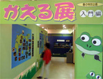
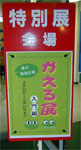
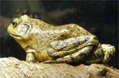
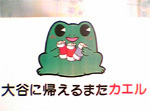
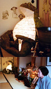
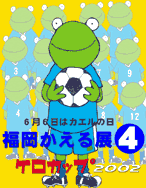
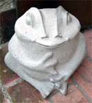

北陸富山でもカエル展！ 【富山発杉之原名人同志記者】地元富山の水族館で「かえる展」が開かれていることを偶然知り、行かないと一生後悔すると思いながらも、それほど期待せずに行って来ました。 ポイントは「入門編」の文字です。この先、「中級編」「エキスパート編」と続くのかという期待感に心臓が 高鳴ります。
 さて、内容はやはり入門編でした。富山県内に生息するカエルたちをメインに、数種類の外国のカエル（ベル ツノ、タピオカ、イエアメ、サビトマト、ヤドクなど）が展示されていました。それと並行して小規模ながらカ エル写真展もあり、カエルの飼育方法の解説コーナー、カエルグッズのコーナーなど、いちおうは「かえる展」 の体裁を保っていたように感じました。
 個人的な希望ですが、「ふれあいコーナー」と称して、水着で思いっきり大量の大型カエルたちと戯れること のできるコーナー（蛙風呂ならなお良し）や、毒蛙体験コーナー、鳴き声当てクイズなどがあると最高です。福 岡かえる展の参考になれば幸いです。ちなみにこのかえる展は５月末まで開催されています。
【全国かえる奉賛会】全国各地にカエル展が展開する日本全土カエル化計画が着々と進行しているのであろう。
かえるなパーキングエリア発見！ 【東北自動車道発まこ助同志記者】 こないだ、田舎から帰ってくる最中に、東北自動車道の大谷PA（上り）に寄ったところ、いつのまにかカエルなパーキングエリアになってたので報告します。どうやらPAのキャラクターがカエルらしく、至るところにカエルが散りばめら れたPAになっていました。
特に、店の看板のカエルは店によって違う絵で（例えばぎょうざ屋だったらぎょうざを抱えていたり）、カエラーならつい頬が緩んでしまうこと請け合いです:-)。長距離ドライブの帰りの休憩に、カエルでリラックスなんていかがでしょうか。あ、ついでに、ここの宇都宮ぎょうざ、とっても美味しかったです:-)。
かえるな工芸品店登場！【福岡発Ｅかえる＠同志記者】かえる展実行委員会を開いた帰りにぶらぶらあるいていたら、ショーウインドウの中のカエルと目があいました。すると、そのお店には、銀細工のカエルの指輪とか、ピアスがたくさんあって、うれしかったなー。 かえる座敷きの人気者カエル大明神！【福岡発蓮かえる＠展同志記者】正月に奉納した、かえる大明神の近況を確かめるために、小郡市にある『かえる寺』に行って来ました。 カエルグッズを大量に集めた『カエル座敷』の中に、どっかりと座り込んだ大明神は、参詣者の人気者になっているそうです。よかったなーっ。かえる展４の会場にカエル喫茶出現！【福岡発ケロリーヌ熟女軍団】６月６日から９日まで開催する『ケロカップ２００２／日韓共催ワールドカップを成功させよう！／福岡かえる展４』の会場に、『かえる喫茶』が出現します。
メニューは、かえる色の飲み物『甘カエル』『甘カエルお玉入り』『挽カエル』『福カエル』などを準備中です。楽しみにねーっ。
福岡かえる展４の公式かえるポスター決まる 【福岡かえる展４実行委員会】今年の公式イラストレーターは、福岡市で売り出し中の、スエキチさんだああああ。かえるがサッカーボールを手にしているなんてすてきでしょ。驚異的なジャンプで相手ディフェンスを飛び越えてゴールだああ。しかも、かえるは決して後退しないぞ。突撃あるのみ！公式ポスターは、以下のアドレスからチラシデータを直接落とせるようにするので、全国各地それぞれに印刷して部屋にはったり、街頭で配ったりしましょう。
Ｅ＠かえる同志が戴帽式！【福岡発けろ同志記者】今年の実行委員をつとめます！。ついに憧れのカエル帽を、先輩カエルガールのぴのこ同志につけていただきました。
これからも、日本全土のカエル化のために頑張ります！ちなみに、帽子を深くかぶり過ぎて、まるきりカエルになってしまいました。
 かえる会議会場にカエル石像！【福岡発=げこげこ大王直筆】かえる展４の打ち合わせ会場に指定した店にでかけると、入り口にカエルの石像がおいてあってびっくり。カエル展の極秘会議が事前に情報もれしたので、店の人が準備していたのであろうか。 その店には、入り口のカエル以外にカエルはいなかったので、なんか不思議な夜なのでした。もちろん、かえる会議はとっても充実したことはいうまでもありません。
カエルTシャツ展に参加しよう！【福岡かえる展４実行委員会】会場に来れない人は、Tシャツ展で参加しましょう。エントリーを待っています。画像を送れば、作業をすすめて、会期中は作品として展示し、会期の終了後には、お手元に配達します。
投稿採用者に武功カエル徽章を授与！ |


かえる古新聞過去に取り上げた記事を見出し付きで一覧したい人は、ここをクリック◆創刊号を見る◆先週号を見る◆話題の号を見る◆かえる新聞の昔を読む
|
私も入っています。。全国かえる奉賛会
大王様に会うには、このバナーをクリック。ずっと奥に写真館があるぞ。全国かえる奉賛会に入会するには、自分のホームページのどこかに、下の部分を追加するとバナーがリンク付きで表示されるぞ。どんどん入会しましょー |


|